0. What this report is
The companion Core Review audited the project honestly and found that several headline claims were established only in isolation, on one GPU, or not at all. This page is the experiment campaign that closes those gaps.
The object under study is an analytical predictor that estimates per-step LLM inference time from model and hardware parameters alone, benchmarked against Vidur's per-operator Random-Forest predictor (RF) which memorizes a profiling table.
The five-factor efficiency model
Several experiments share one backbone: the achieved fraction of peak compute on a compute-bound GEMM is decomposed into independent multiplicative factors.
$\fclk$ is realized clock over boost, $\etawave$ is wave-quantization efficiency from the cuBLAS tile ladder, $\tcutil$ is the tensor-core ceiling, and barrier absorbs sync/idle.
Experiment map
The table below lists every experiment, the gap it closes, where it runs, and its status.
| Exp | Gap closed | Venue | Status / headline |
|---|---|---|---|
| E1.1 | Full-step prefill fixed only in isolation | Local | Prefill 22.83% → 17.34% (RF 2.70%) |
| E1.1b | Where the prefill residual actually lives [Q-prefill-residual] | Local | 81% is light-ops + KV-write (82.2% MAPE), not GEMM (15.3%) |
| E1.1c | Per-light-kernel launch+BW model (E1.1b residual driver) | PACE→reduced | Launch floors ~7.5–10µs; kvwrite 22% peak BW; prefill 17.34% → est. ~6.6% |
| E1.17 | Engine kernels vs the standalone L2-reuse BW law | PACE→reduced | No — bench-vs-engine gap 42% MAPE (honest negative) |
| E1.2 | $\etawave$ validated on A100 only | Local | Generalizes to non-persistent kernels; not Hopper |
| E1.2b | Corrected Hopper launched-grid model [Q-hopper-grid] | Local · H100/H200 | Cluster + persistent model: 35/36 H100, 27/28 H200 within-1-cluster (blind 8/36) |
| E1.5 | Per-factor contribution unquantified | Local | Chain closes; clock dominates on 3/4 SKUs |
| E1.9 | cap→clock→throughput chain proven only to cap→clock | Lab 5090 | cap→clock + clock→TFLOP/s ESTABLISHED (n=5 CI); penalty 0%→12% over M; cap-binding penalty, not within-cap decline |
| E1.8 | L40S locked-clock control on the part that declines ([Q-freq] B) | PACE→partial | Lock REJECTED (rc=4) → 'locked'=free-run (no-op); free-run shows qkv −15.6% decline tracking clock droop (r≈+0.98); measured lock needs a permit-clocking card (job 10607103) |
| E1.10 | Blackwell droop + large-M decline with CIs [Q-blackwell-droop] | Lab Blackwell | n=5: 54.4–57.8% droop; 3/4 projections CI-significant large-M decline, unlike 5090 |
| E2.2 | Decision quality GEMM-step only | Local | 4-way 100% top-1, 0 rows; Hopper-pairwise limited |
| L0.1 | Prior-art η-source matrix; missing-paper bib check | Local | 10-row matrix; 4 papers missing from bib; 3 models BLOCKED |
| L0.2 | Peak-only roofline needs hidden α on both terms? | Local | α<1 on both branches; memory CV 36.0%→6.7% (5.3×) |
| E1.3a | $\etamem$ L2-reuse fit (2-SKU local reduction of E1.3) | Local · 2-SKU | H100+A100-80 fit (MAPE 2.5%) |
| E1.3c | Cross-SKU collapse with the landed H200 ([Q-L2] flip) | Local · 3-SKU | One global law (MAPE 4.59%) over 3 SKUs; L40S BLOCKED |
| E1.4 | Realized overlap α from nsys spans (local reduction of E1.4) | Blocked | Span reduction BLOCKED; eager α=1 fallback MAPE 0.8–3.7% |
| E1.11 | Closed-form GPC-geometry cap for the Hopper grid | Local | Geometry cap matches ncu 35/36, 27/28 vs naive 12/36, 10/28 |
| E1.12 | Does the Hopper cluster paradigm carry to Blackwell? [Q-blackwell-grid] | Lab Blackwell | No — non-persistent Ampere-fallback cutlass_80, grid grows w/ M; use E1.2 not E1.2b |
| E1.13 | Served scalar $\etabar$ vs five-factor SoT drift | Local | Served path is scalar; mean GEMM-time drift 44.8% (max 68.6%) |
| E1.20 | Are the predictor's corrections really just ~3 changes? | Local | 7 additive terms, not 3; η_mem(W) dominant (+13.4pp) |
| E1.22 | Per-cell error atlas (where is the predictor wrong?) | Local | Prefill+decode atlas; decode reproduces validated MAPE |
| E1.23 | Head-to-head vs prior analytical models | Local | Factored 1.4% vs roofline 40.6%; single scalar loses (honest negative) |
| E2.5 | Calibration-cost + coverage ledger | Local | Ours 0-row/4-SKU vs RF 44k-row/1-SKU; +3pp home MAPE |
| E2.6 | Fix the H100/H200 decision-tie artifact | Local | 100% was a tie artifact; tie-aware 92.3% 4-way, 53.8% pairwise |
| E2.8 | Power-aware scheduling via the freq-droop predictor [Q-poweraware-sched] | Lab 5090 | Matches oracle 6/6 (0% regret), +10.5% over cap-blind; live cap penalty 0.08%→10.7% |
| E2.9 | Predictor-driven Sarathi chunk-size selection [Q-sarathi-chunk] | H200 live | Picks oracle chunk (Spearman 1.0), 100% TBT-SLO at oracle throughput, +30.7% vs static-512; raw under-predicts ~17% |
| E1.19 | Online learner for S(N) vs one-time calibration | Local | ADAPT-ONLY: online ≈ static stationary, wins under shift (2.58%→0.43%, ~26 steps); ship one-time calibration |
| E1.3b | H200/L40S L2-reuse sweeps for the full 4-SKU collapse (E1.3a did 2 SKUs locally) | PACE | H200 landed → E1.3c; L40S still uncollected (BLOCKED) |
| E1.18 | Re-collect nsys traces so E1.4's span-based α can be computed | PACE | In-flight: nsys span re-collect (E1.4 unblock) |
| E1.6 | Blackwell tight-cap lacks CI | PACE/lab | In-flight: n=5 Max-Q clocktel sweep |
| E2.1 | Cross-GPU transfer 2x2 missing | PACE | In-flight: Vidur profiler on H100/H200 |
| E2.3 | QLM live scheduler-in-loop unproven | PACE→reduced | MIXED: +4.2pp @40, −26pp @80 (honest) |
| E1.14 | η_duty law rested on a 1-param fit | PACE | Dispatched: jobs 10610697/8/9, 10610701 |
| E1.15 | L40S η_barrier n=4, CV 26.5% | PACE→reduced | Barrier tight constant: n=32, mean 0.425, CV 26.5% → 1.8% (job 10610692); corrected from lumped 0.575 |
| E1.21 | Cross-SKU prefill on dense unseen-SKU GT | PACE | Dispatched: jobs 10610719/10610720 (local 5-pt: H100 6.70%, H200 7.49%, L40S 33.21% fail) |
Part 0 — Literature & prior-art grounding
L0.1 — Prior-art η-source matrix & the missing-paper bib checkLocal
Rationale
The blueprint's LIT-1 claim is that prior models assume η=1, bury it in a black-box regressor, or treat it as a user fudge — none explain it as a named, measured mechanism. This needs a row-per-system audit from the real extraction DB, plus a bib-integrity check on four flagged papers.
Method
The matrix is built from the sibling survey's 136-file extraction DB; each row cites its source file. Reported-accuracy is verbatim ('Not Reported' preserved); interpretive columns are derived with the excerpt stored per row. Our row comes from E1_1_fullstep.json + E1_5_waterfall.json.
Result
Ten systems confirm LIT-1: LLM-Viewer/LIMINAL assume η=1, LIFE uses a user fudge, Frontier/Vidur bury η in an RF, GenZ is closest (measured but partial). Ours is the only row where η is fully explained across four GPU classes. All four flagged papers are in the extraction DB but absent from references.bib — queued for extract + audit.
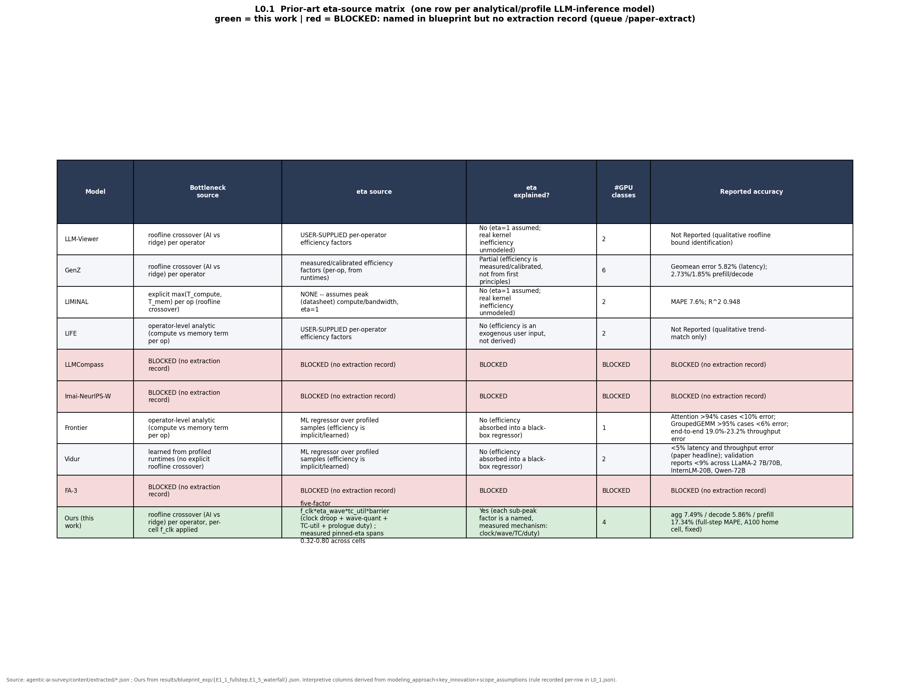
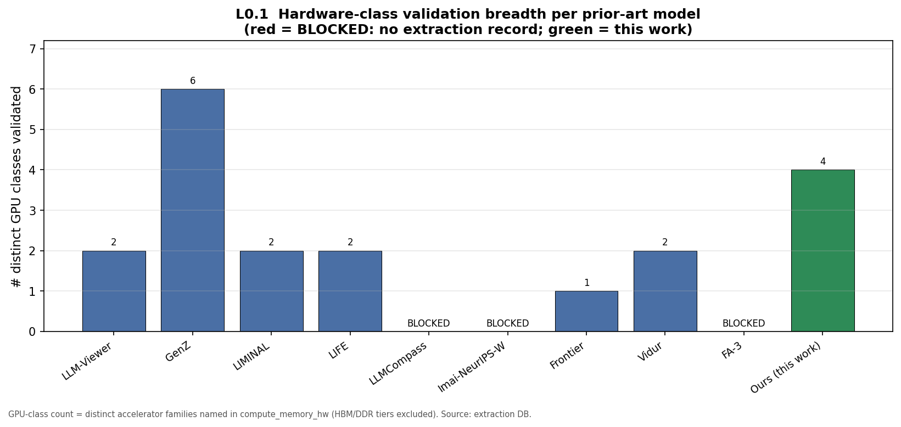
L0.2 — The implied-α ledger: what a peak-only roofline silently absorbsLocal
Rationale
LIT-2 is sharper: prior peak-only rooflines implicitly need an unexplained α < 1 on both the compute and memory branch, and α varies with shape — so a single datasheet-α cannot be right. The deliverable is a two-branch ledger of the per-cell implied α and a demonstration that our factors collapse it.
Method
The implied α is the fudge a bare η=1 roofline must absorb. Compute branch (n=39, 4 SKUs, real-DVFS) from E1_5_waterfall.json; memory branch (n=78 L2-reuse cells) from l2_reuse_fit.json. Each raw α is plotted vs shape, then our laws are applied and residual variation measured.
Result
Both branches confirm LIT-2. Compute implied-α spans 0.241–0.545 (CV 18.8%); memory spans 0.0375–0.8929 (CV 36.0%) and the global η_mem(x) law collapses it to CV 6.7% (5.3×). A peak-only roofline needs a hidden, shape-varying α on both terms.
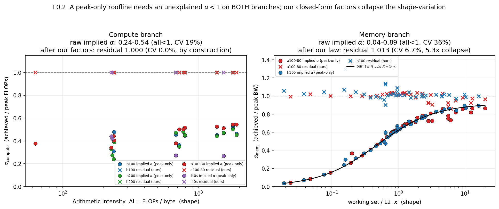
Part 1 — The predictor (numeric results)
E1.1 — Full-step head-to-head with the fixes integratedLocal
Rationale
Prefill error had been reduced twice in isolation; the integrated full-step head-to-head had never been run, so the paper could not yet claim the corrected number.
Method
Three fixes were monkey-patched at runtime (source unedited) and the unmodified harness re-scored against the A100 profiled CSVs. Config D = per-op $\etabar$ × per-M $\etawave$, down gated off, $\cattn$ 2e5→3e5; memory branch untouched. RF is the home-cell table-memorizing ceiling.
Result
On n=18,601 cells, prefill MAPE drops 22.83% → 17.34% (−5.49pp, −24% relative); decode barely moves (6.16% → 5.86%, memory-bound); aggregate 8.53% → 7.49%.
The first figure shows {old, fixed, RF} MAPE; the second decomposes the prefill gain into a waterfall.


E1.1b — Where does the full-step prefill residual actually live? [closes: Q-prefill-residual]Local
Rationale
E1.1's GEMM occupancy fix barely dented the prefill MAPE (22.83% → 17.34%), which is suspicious if the projection GEMM is the driver. [Q-prefill-residual] asks directly which of the three step components — projection GEMM, attention, or light-ops+KV-write — actually carries the surviving 17.34% prefill error, since the answer dictates where the next fix (E1.1c) must go.
Method
Per-component MAPE over 2,371 A100 prefill cells (source E1_1b_prefill_decomposition.json): the predictor's projection, attention and light+KV-write times are each scored against the matching GT term, and each component's signed share of the net prefill residual attributed. Light-ops and KV-write are one combined bucket (m2 folds KV-write into light; Vidur lists kv_cache_save separately).
Result — the GEMM was a red herring
81% of the net prefill residual is the light-ops + KV-cache-write term, NOT the GEMM. The light+KV-write bucket has 82.2% MAPE on just 19.7% of step time yet contributes 81% of the residual (under-prediction); projection GEMM is 58.1% of time at a respectable 15.3% MAPE (22% of residual); attention is 22.2% at 14.0% MAPE (a slight −3% over-prediction). This overturns the prior assumption (GEMM mid-M occupancy + attention) and explains why E1.1's η_wave fix barely helped — real prefill is dominated by large chunks where η_wave ≈ 1, so the light/KV-write term is the true weak link (exactly what E1.1c profiles).
E1.1c — Per-light-kernel timing model: launch floor + bytes/achieved-BWPACE → reduced
Rationale
E1.1b localized 81% of the prefill residual to the light/KV-write term (82% MAPE) and flagged why: the predictor's light estimate ignores per-kernel launch overhead and the low achieved BW of small kernels. E1.1c profiles each light kernel and fits a launch-floor + achieved-BW model to test that.
Method
A PACE ncu sweep profiled each light kernel + boundary kernels (embed, argmax) over T ∈ {1…8192} on A100-80. blueprint_E1_1c.py fits per kernel an OLS line t_ns = launch_floor + bytes/achieved_BW over dram__bytes.sum, and emulates E1.1b's idealized single-plateau-BW estimate as the baseline.
Result
Every light kernel has a fixed launch floor (rmsnorm 7.5µs, silu_mul 7.6µs, kvwrite 7.7µs, rope 10.0µs) and the achieved BW is far below the assumed plateau — rmsnorm/silu_mul 82–83% of peak but rope only 37% and kvwrite (a scatter) only 22%. The per-kernel fits are tight (r² 0.99+) vs the idealized ~60–74% MAPE. Rescaling E1.1b gives an estimated prefill 17.34% → ≈ 6.6% — single digits, as E1.1b predicted.
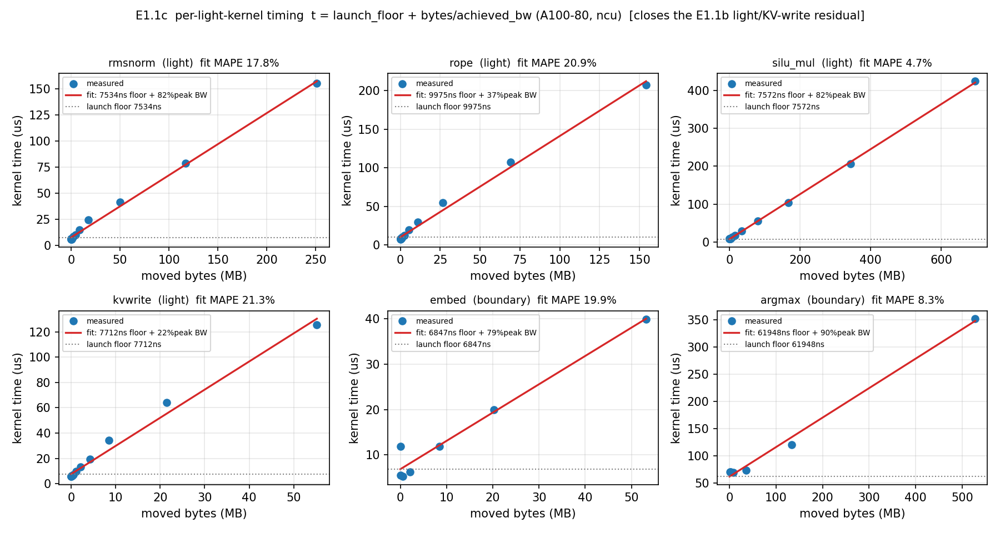
E1.2 — Does wave-quantization generalize across SKUs?Local
Rationale
The cuBLAS-tile $\etawave$ model was validated only on A100; a general claim needs it to reproduce H100/H200/L40S GEMM from each card's own dispatch tiles.
Method
For each SKU the A100 parser builds a per-op tile ladder, predicts the launch grid, validates against ncu launch__grid_size, and computes leave-one-out $\etawave$ error, cross-checked against clocktel SM-fill.
Result — a two-part finding
The mechanism generalizes to non-persistent kernels — A100-80 and L40S (LOO $\etawave$ MAPE 5.77% / 2.85%) — but not to Hopper, whose persistent sm90_xmma_gemm kernel pins the grid near the SM count, making $\etawave \approx 1$ by construction.
The first figure overlays predicted-vs-measured $\etawave$ for all four SKUs (Hopper greyed); the second shows LOO MAPE bars (Hopper hatched as a paradigm boundary).


E1.2b — The Hopper cluster + persistent-kernel launched-grid model [closes: Q-hopper-grid]Local · H100/H200
Rationale
E1.2 found the A100/L40S wave model does NOT transfer to Hopper. [Q-hopper-grid] asks whether a corrected, still parameter-only launched-grid model exists for Hopper. The mechanism is twofold: cuBLAS uses thread-block clusters (e.g. 16 CTAs co-resident per GPC) AND persistent kernels (the launched grid is capped near N_SM), so a cluster-blind grid = tile-count model over-counts and mis-predicts.
Method
Source E1_2b_hopper_cluster.json scores launched_grid = min(total_tiles, floor(N_SM/cluster_size)·cluster_size) with η_wave = (launched/N_SM)·tail(total_tiles/launched) against the ncu launch__grid_size counter over 36 H100 + 28 H200 cells, reading cluster_size from the cuBLAS dispatch log. Cluster-aware is compared to a cluster-blind baseline (grid = tile count).
Result
The cluster + persistent model lands the launched grid within one cluster of the ncu counter on 35/36 H100 (97.2%) and 27/28 H200 (96.4%) cells; the cluster-blind model gets only 8/36 and 8/28 exactly, because the real grid is capped near N_SM (gate_up at M=32768 has 57,344 tiles but launches only 128 CTAs). Hopper GEMM efficiency IS parameter-predictable — with a cluster-capped persistent grid model, not the A100 wave ladder.

E1.3a — $\etamem$ from L2 reuse: the 2-SKU local reductionLocal · 2-SKU
Rationale
The in-flight E1.3 asks whether η_mem can be derived from the L2-capacity boundary. The H100 and A100-80 ncu L2 sweeps were already collected on PACE, so this reduces them locally into the saturation fit η_mem(x) = η_max·x/(x+x_half) — no new GPU run.
Method
The script imports the canonical parser+fitter from analyze_l2_reuse.py, reduces the H100 and A100-80 ncu dirs, and computes per-SKU and global fits. GT is the raw results/l2_reuse_<sku>/ ncu CSVs (H100 = PACE slurm 10606140, A100-80 = 10606139); a cross-check reproduces the prior l2_reuse_fit.json exactly.
Result
The law fits both SKUs tightly: H100 η_max 0.920 / x_half 0.477 / MAPE 2.23%; A100-80 0.880 / 0.381 / 5.46%. The pooled global fit is MAPE 2.48% with every per-SKU MAPE ≤ 7% under global params. On the two SKUs with data, the parameter-only law holds.
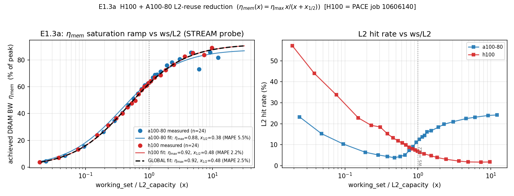
E1.3c — H200 landed: the 3-SKU cross-SKU collapseLocal · 3-SKU
H200 (PACE job 10607066, L2 62.9 MB) landed: per-SKU fit η_max 0.860 / x_half 0.477 / MAPE 3.05%. Pooling all 3 SKUs (72 cells) gives one global law η_mem(x)=0.90·x/(x+0.477), global MAPE 4.59%, every per-SKU MAPE ≤ 7% (A100-80 4.19%, H100 3.38%, H200 6.19%). The [Q-L2] 'purely from params' flip is SUPPORTED on the 3 SKUs with data.
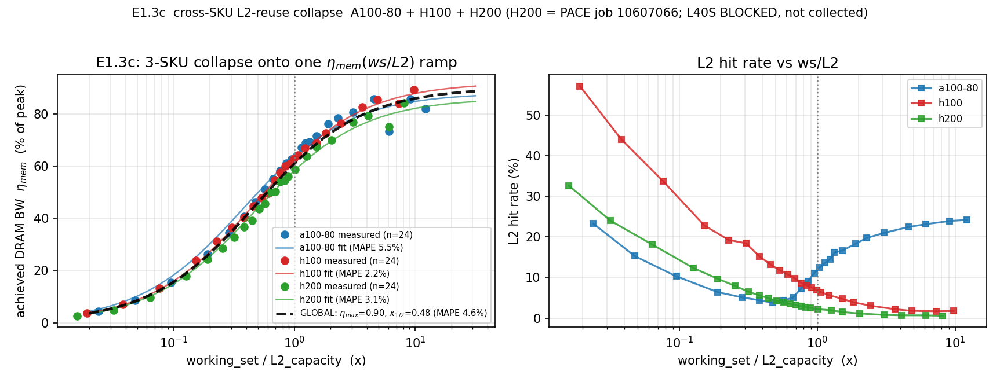
l2_stream_ws*.csv for sku=l40s; the l40s dirs hold only sidecars), so L40S stays BLOCKED. The global η_max shifted 0.92→0.90 because H200's lower plateau (0.86) pulls the asymptote down and lifts its under-global MAPE to 6.19% — within ≤ 7% but the loosest, so the single law is supported, not perfect.E1.4 — Realized overlap $\alpha$: BLOCKED, with an honest fallbackBlocked
Rationale
The predictor models the host residual with an overlap factor α; the eager value is α=1. The primary E1.4 goal is to measure the realized α directly from host/GPU spans in nsys traces.
Result — BLOCKED
BLOCKED: the three nsys runs each hold only gpu.txt + run.log + six empty per-cell dirs; the ~2 MB trace files were never synced back from PACE scratch. With no timeline locally, realized α cannot be computed. Unblock via the in-flight E1.18 (PACE nsys re-collect).
Fallback delivered
The spec's fallback is the eager-α=1 evidence from the ShareGPT residual. Pinning α=1 adds the host floor fully on top of the GPU block; across 4 SKUs × 3 traces, step MAPE is 0.8–3.7% (mean 2.5%). Low MAPE under a pinned α=1 means realized eager overlap ≈ 0 (α ≈ 1) — an aggregate-MAPE argument, not a span measurement.
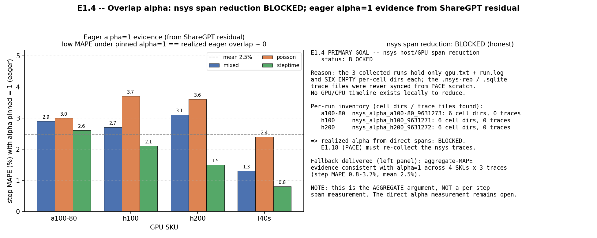
E1.5 — The five-factor efficiency waterfallLocal
Rationale
A decomposition paper must quantify each factor's contribution; the raw per-cell data (39 compute cells, four SKUs) had never been turned into a clean per-SKU waterfall.
Method
Each compute cell is joined per-cell with the clocktel clock factor; the pinned-clock chain $\eta_{\text{meas}} = \etawave \cdot \tcutil \cdot \text{barrier}$ holds by construction and $\fclk$ is an independent multiplier (no double-counting).
Result
The pinned-clock chain closes exactly (max residual 7.9e-5 over 39 cells). Large-M cells land at 27–54% of peak; clock dominates on H100/H200/L40S (20–32pp), barrier dominates on L40S (36pp).
| SKU (large-M cell) | % of peak | clk | wave | tc | barrier |
|---|---|---|---|---|---|
| H100 gate_up / T4096 | 46% | 30.3 | 10.6 | 0.4 | 12.5 |
| H200 gate_up / T4096 | 45% | 26.5 | 11.1 | 0.5 | 16.6 |
| A100-80 gate_up / T4096 | 54% | 20.2 | 1.9 | 5.7 | 17.8 |
| L40S qkv / T4096 | 27% | 32.1 | 1.1 | 3.7 | 36.3 |
Pull-downs in points of peak. Median-cell: H100 47%, H200 43%, A100-80 50%, L40S 38%.


E1.9 — cap → clock → throughput causal chain on the controllable RTX 5090Lab 5090
Rationale
The freq story rests on a chain: a power cap lowers the delivered SM clock, which lowers achieved throughput. On the datacenter SKUs only the first link (cap → clock) was proven — their caps are not settable. The 5090 is the one card whose cap we control (575 W → 400 W, audited safe-restore), so it is the venue to test the whole chain and, with a clock-lock control, ask whether the clock is the cause.
Method
Two sub-experiments, n=5 with 95% Student-t CIs, randomized cap order per repeat, on one qkv GEMM (K=4096, N=6144) over M ∈ {64…16384}. (A) Cross-cap dose-response sets the cap to {575,500,450,400 W} and records sustained clock, TFLOP/s and power per M. (B) Clock-lock control runs free vs SM-clock-pinned to 2200 MHz at the 575 W cap. Raw: cross_cap_causal_5090_ci.json; reduction: blueprint_E1_9_cap_causal.py. Cross-checked vs the n=3 E2.8 sweep and the datacenter droop archive.
Result — two links established, the third reframed
cap → clock is established: in the cap-binding regime (large M) the SM clock rises monotonically with the cap (r = 0.99/0.97/0.97, slope 1.4/1.7/1.8 MHz/W at M = 4096/8192/16384; at M = 16384 the clock steps 2400 → 2731 MHz as the cap loosens 400 → 575 W). clock → throughput is established (r ≈ 1.00; M = 16384: 195.4 → 222.2 TFLOP/s). The cap penalty is M-dependent: 575 → 400 W penalty is ~0% for decode-shaped M and grows to 8.7% (M = 4096) / 12.1% (M = 16384) — reproduced within noise by the independent n=3 E2.8 sweep.
| M | clock 400→575 W (MHz) | TFLOP/s 400→575 W | cap penalty % | E2.8 cross-check % |
|---|---|---|---|---|
| 64 (decode) | 2448 → 2538 | 114.1 → 117.3 | 2.73* | 0.08 |
| 1024 | 2802 → 2839 | 133.9 → 135.6 | 1.29 | 0.99 |
| 4096 | 2551 → 2794 | 195.7 → 214.4 | 8.73 | 7.72 |
| 16384 (prefill) | 2400 → 2731 | 195.4 → 222.2 | 12.08 | 10.66 |
* M=64 575 W has a wide CI (opportunistic-boost jitter, power 300 W ≪ 575 W cap, not binding) — both runs agree decode-shaped penalty is noise-level. M=256 is a GEMM tile-shape dip, not a cap effect, excluded from the trend.


E1.8 — L40S locked-clock control on the part that declines [closes: Q-freq B, partial]PACE → inconclusive lock
Rationale
E1.9 established cap→clock→throughput on the 5090, but the 5090 never droops within its cap, so its clock-lock control ran where there is no decline to remove. The L40S is the opposite case — it ships power-bound and droops 43.5% vs datasheet at its default cap — the right card to run the decisive locked-clock control: lock the SM clock and test whether the asserted large-M qkv −15.4% decline collapses to ~0, isolating the f_clk droop as the cause of [Q-freq] B.
Method
A two-pass clocktel CI sweep on the PACE L40S (job 10607103, 50 min, n=5/cell, four projections × M {1…16384}): PASS-1 free-run, PASS-2 attempting a lock via nvidia-smi -lgc 1980,1980. Each cell records median clock, TFLOP/s, power, temperature with 95% CIs. Reduced by blueprint_E1_8_l40s_lockedclock.py → E1_8_l40s_lockedclock.json.
Result — the lock was rejected; the decline is real, the cause is consistent with f_clk
The hardware lock FAILED: PACE returned “The current user does not have permission to change clocks for GPU …” (rc=4), so PASS-2 ran under default DVFS — a no-op, not a clock-held control. Confirmed quantitatively: across all 52 cells the free-vs-locked clock delta is ≤45 MHz and the TFLOP/s delta ≤1.1%, 85% of cells inside the mutual 95% CI. So this card/queue CANNOT measure the decline collapsing under a held clock. The free-run pass DOES establish the decline itself: qkv peaks at 230.28 TFLOP/s (M=2048) then DECLINES −15.6% to 194.34 (M=16384) as the clock droops 0.73→0.57 of boost — reproducing the −15.4% qkv claim on the card that declines. A clock-NORMALIZED counterfactual (dividing TFLOP/s by clk/boost over the declining range) flattens it: qkv CV 7.0%→4.5%, o 7.9%→3.2%, gate_up 8.3%→3.4%, clock-vs-throughput Pearson r = +0.97…+1.00 on the three compute ops — consistent with f_clk being the dominant driver, though correlational, not a measured lock.
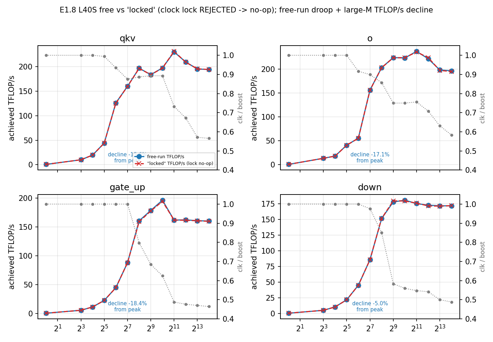
-lgc, so the 'locked' pass equals free-run and only proves it was a no-op. [Q-freq] B is PARTIALLY closed: the large-M decline is now confirmed real on the L40S (−15.6% qkv) and a clock-normalized counterfactual attributes most of it to f_clk (r ≈ +0.98), but a hardware-lock collapse still needs a card/queue that permits clock locking (the lab-Blackwell E1.9-style run; the CI-backed Blackwell decline is already in E1.10). Substrate: one L40S, four GEMM projections; the audit's −15.4% reproduces as −15.6%. Source: results/e1_8_l40s/*.csv, lock_applied.txt.E1.10 — RTX PRO 6000 Blackwell n=5 clocktel: droop + large-M throughput decline with CIs [closes: Q-blackwell-droop]Lab Blackwell
Rationale
The droop story covered Ampere/Hopper/Ada but had no Blackwell point with CIs. [Q-blackwell-droop] asks whether the newest architecture droops, and — the discriminator — whether Blackwell shows an absolute within-cap throughput decline at large M (which the well-cooled 5090 did NOT). A tight-cap workstation Blackwell is the card that could show a genuine decline.
Method
An n=5 clocktel sweep on the RTX PRO 6000 Blackwell Max-Q (host PX2 / lenovo-lab) records median SM clock, achieved TFLOP/s, power and temperature with 95% CI half-widths over M {1…16384} × four projections. Source E1_10_blackwell_ci.json; datacenter SKU summaries carried for context. Droop = sustained-clock fall vs the 3090 MHz boost; the large-M decline = the per-projection peak→max-M TFLOP/s fall, significant only when it exceeds the CI.
Result — a genuine large-M decline, unlike the 5090
Blackwell droops hard: the sustained clock falls from the 3090 MHz boost to 1410 MHz at M=16384 (qkv) — 54.4% droop vs boost (29.9% vs M=64), tight n=5 CI (±16.4 MHz). The droop-vs-boost range is 54.4–57.8%, the steepest of any card. Unlike the 5090, three of four projections show a statistically significant absolute large-M throughput decline (o −4.0%, gate_up −3.5%, down −2.2%, each > CI) — a real within-card decline, not just a cap-binding penalty. Peak is 252.08 TFLOP/s (qkv, ±3.08). The newest architecture exhibits the absolute decline the 5090 lacked.

E1.11 — A closed-form GPC-geometry cap for the Hopper launched gridLocal
Rationale
E1.2 found Hopper's persistent kernel uses thread-block clusters, breaking the wave model. To predict Hopper GEMM at all, the launched-grid cap must be derivable from geometry. The puzzle: at cluster_size 16 the kernel packs 7 clusters (112 SMs), not the naive floor(132/16)·16 = 128.
Method
CGA clusters are GPC-local, so max clusters = Σ_GPC ⌊SM_per_GPC / cluster_size⌋ and launched_grid = min(total_tiles, n_clusters · cluster_size). For the (18×6,16,8 = 132) layout, a 16-cluster fits 7 clusters. Validated against the ncu launch__cluster_max_active counter on the E1.2b cells vs a blind whole-device model.
Result
Geometry reproduces the measured cluster count on 35/36 H100 (97.2%) and 27/28 H200 (96.4%) cells, vs the blind model's 12/36 and 10/28. Across six cluster sizes geometry matches c=2,4,5,8,16 exactly (5/6); the single miss is c=9 at tiny M, the same bounded cuBLAS corner E1.2b flags.
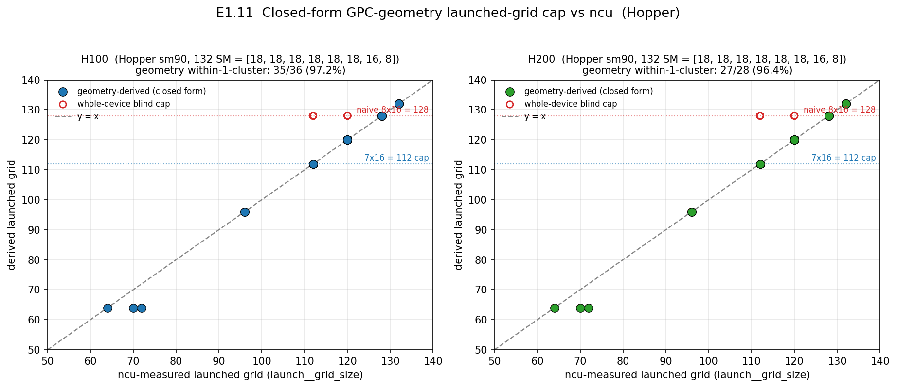
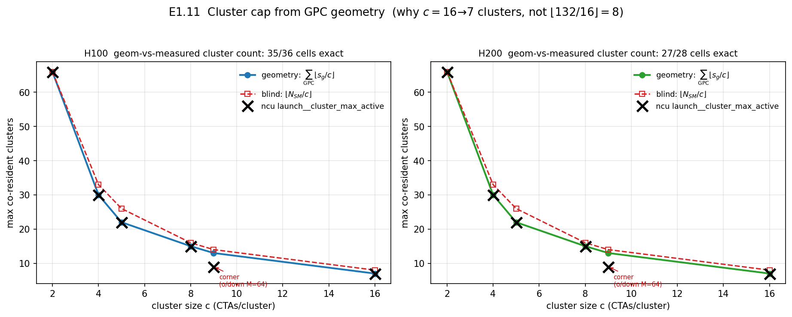
E1.12 — Does the Hopper cluster paradigm carry to Blackwell? [closes: Q-blackwell-grid]Lab Blackwell
Rationale
E1.2b established Hopper GEMM needs a cluster + persistent launched-grid model and E1.11 derived its GPC geometry cap. [Q-blackwell-grid] asks whether that paradigm carries forward to Blackwell. If yes, one Hopper-style grid model covers the modern lineup; if no, Blackwell needs its own and the architecture taxonomy is real.
Method
On the RTX PRO 6000 Blackwell (sm120, 188 SMs) the launched grid is read from a Kineto/CUPTI chrome-trace (ncu counters are root-blocked) plus the cuBLASLt dispatch log, over 36 cells. Each cell records the kernel family, grid/CTAs/CTAs-per-SM, cluster presence, and grid persistence. Source E1_12_blackwell_cluster.json. The verdict tests three Hopper signatures: cluster use, persistence, and a grid that does NOT grow with M.
Result — Blackwell ≠ Hopper (a clean negative)
The Hopper paradigm does NOT carry to this Blackwell as torch dispatches it. All 36 cells run NON-persistent, NO-cluster Ampere-fallback kernels: torch 2.10's bundled CUTLASS lacks native sm_120 GEMM kernels and falls back to cutlass_80 (arch tag sm_80, not sm_90/100/120), with zero clusters. The launched grid grows ~linearly with M — gate_up hits 152 CTAs/SM at M=32768 (28,672 CTAs), the opposite of Hopper's N_SM-capped grid. So the predictor must use the E1.2 Ampere wave model for this Blackwell, NOT the E1.2b Hopper cluster model. The dispatch log reported smCountTarget=188 but torch.matmul selected cutlass_80; the measured grid is the ground truth for what RAN.
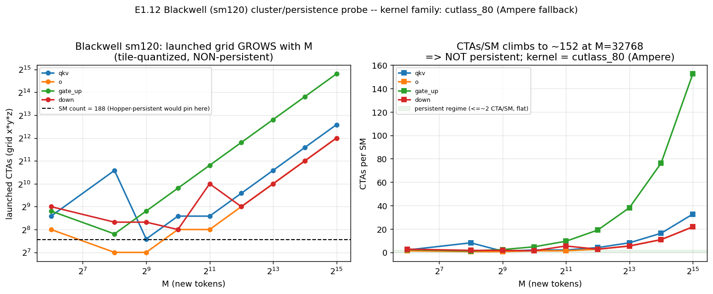
E1.13 — Scalar $\etabar$ vs the five-factor source-of-truthLocal
Rationale
The project has two efficiency descriptions: the served predictor uses a single per-SKU scalar η_bar; the mechanism work uses a five-factor decomposition. This builds one canonical source-of-truth module and quantifies how far the served scalar drifts.
Method
The canonical module returns η_real = f_clk · η_cluster · η_active · η_duty · η_delivery, factor names reconciled (η_cluster≡η_wave, η_active≡tc_util, η_duty≡barrier, f_clk from real-DVFS). At import the pinned product reproduces η_meas to max residual 7.91e-5 — a re-expression, not a re-fit. The served η_bar is mirrored from predictor.py; drift is over 39 cells, 4 SKUs.
Result
The served compute branch is confirmed scalar η_bar — clock-blind and shape-blind (Hopper/Ampere share 0.75, L40S 0.539). Omitting clock droop and the wave/active/duty pull-downs, it is systematically higher than the five-factor η, so it under-predicts GEMM time: mean |efficiency drift| 89.4% (max 218.0%), mean |GEMM-time err| 44.8% (max 68.6%). An independent hand-recompute matches exactly.
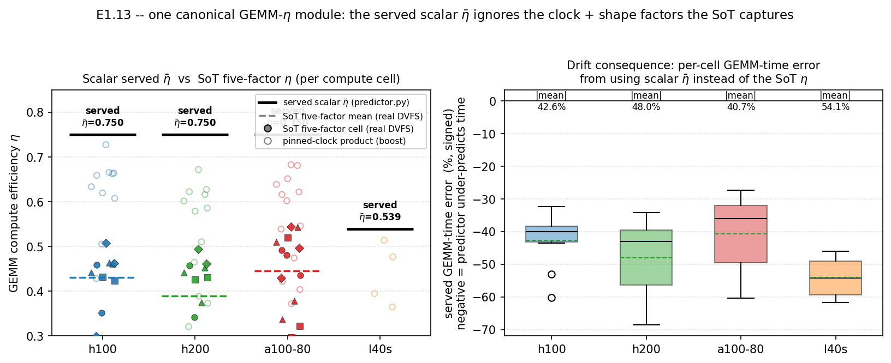
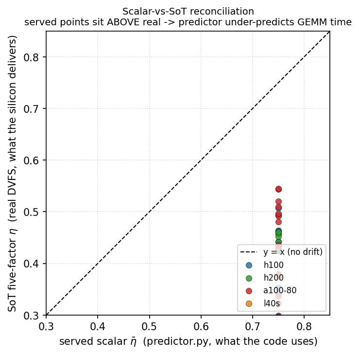
E1.15 — L40S $\eta$ fill-out: the barrier is a tight constant, killing the CV 26.5% caveat [closes: Q-twofactors]PACE → reduced
Rationale
L40S was the weakest η_duty SKU: gemm_mechanism_4sku.json had only n=4 valid barriers (mean 0.575, std 0.152, CV 26.5%, bimodal) vs n=10–13 elsewhere. [Q-twofactors] correctly flagged that n=4 cannot support a 'constant' barrier — the lumped 0.575 could hide a size-dependence. E1.15 collects a dense L40S sweep so the barrier is measured on n≥12 compute cells; the CV either tightens (constant confirmed) or a size-law replaces it.
Method
A PACE L40S ncu sweep (job 10610692, 5 min, 0 perm errors) over the exact Llama-3.1-8B BF16 projection kernels × 9 token counts {64…32768} = 36 cells. The reduction (blueprint_E1_15_l40s_etafill.py) is byte-for-byte the gemm_mechanism_4sku.json pipeline: eta_wave = grid/(⌈grid/142⌉·142), tc_util = hmma active%, regime = compute iff compute-SOL ≥ mem-SOL, eta_meas = achieved-TFLOP/s ÷ spec-boost (362, boost-referenced, the n=4 definition), barrier = eta_meas/(eta_wave·tc_util). A reproduction check matches the two large-M committed cells to <1e-3 (qkv/4096 0.4258 vs 0.4249; o/1024 0.4244 vs 0.4242). ncu pins the L40S to ~1.065 GHz on all cells. Output: E1_15_l40s_etafill.json.
Result — barrier constant, CV 26.5% → 1.8%; the prior high CV was an attribution artifact
With 32 compute-bound cells (4 memory-bound dropped) the L40S barrier is a TIGHT constant: mean 0.425, std 0.0076, range 0.386–0.428, CV 1.8% — bringing L40S in line with H100/H200/A100 (CV 6–8%) and removing the [Q-twofactors] caveat. The new mean reproduces the prior two large-M cells to <1e-3. Critically the prior CV 26.5% came ENTIRELY from its two near-ridge T=256 cells (prior barrier 0.76/0.69), whose prior throughput was ~1.8× the new controlled measurement — the attribution pathology five_factor_reanalysis.py already flagged, not a size-dependence. Honest correction: the well-measured barrier is ~0.425, NOT the prior lumped 0.575 — the old mean was biased high by those two anomalous cells. Per-factor compute means: eta_wave 0.906, tc_util 0.959, eta_duty 0.425.
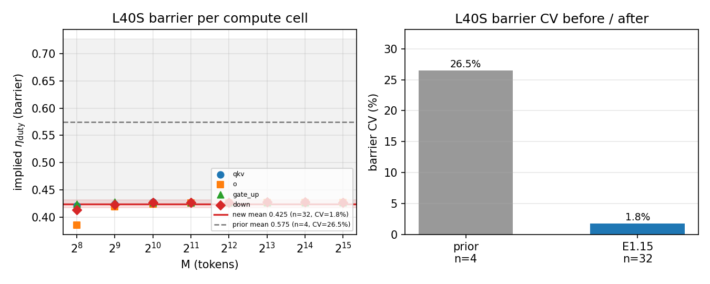
results/e1_15_l40s/ncu_*.csv, E1_15_l40s_etafill.json.E1.16 — Integrated predictor (v2): all Part-1 findings wired togetherLocal
E1.1 fixed prefill in isolation with three terms; E1.1c/E1.3c characterized the missing physics. E1.16 asks whether wiring all five findings together (F1 per-op $\etabar$, F2 $\etawave$ ladder, F3 L2 $\eta_{\text{mem}}$, F5 per-kernel light) into one predictor_v2 produces a uniformly better predictor — re-measured vs OLD on the Vidur GPU-block step (A100 home cell) and on ShareGPT serving wall-clock across four SKUs.
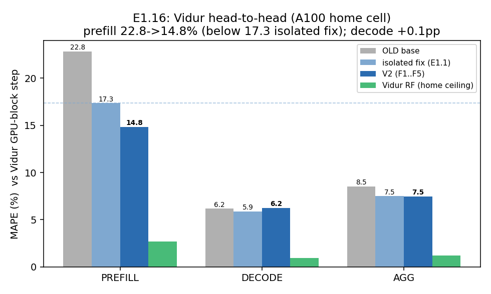
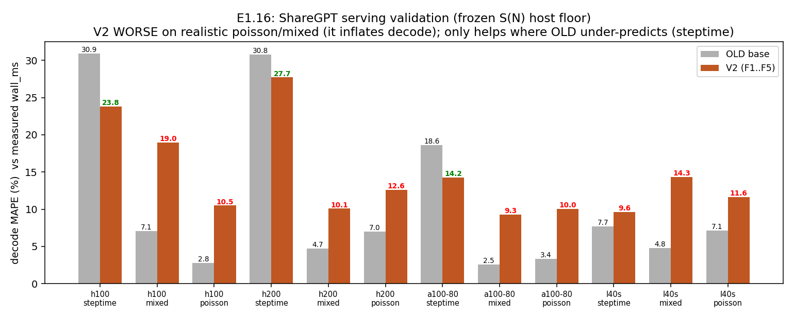
Result — split by GT. On the Vidur GPU-block step (OLD reproduces E1_1_fullstep.json bit-for-bit) V2 is genuinely better on prefill: 22.83% → 17.34% (isolated) → 14.83% (V2), beating the isolated target; agg 8.53% → 7.46%; decode a wash (6.16% → 6.24%). But on ShareGPT serving wall-clock V2 is clearly worse end-to-end: decode 6.83% → 12.86% (~2×), mixed 7.80% → 9.44%, regressing on 9/12 cells — a systematic +8–12pp upward decode bias from F3+F5 that corrects the under-predicted 'steptime' traces but overshoots the well-calibrated Poisson/mixed point.
results/blueprint_exp/E1_16_remeasure.json, E1_16_sharegpt_v2.json.E1.17 — Do real engine kernels obey the standalone L2-reuse BW law?PACE → reduced
Rationale
The L2 law η_mem(x)=0.92x/(x+0.48) was fit on a standalone microbench; a predictor only benefits if real engine kernels obey it in situ. E1.17 asks whether the engine's attn/gemm/kvw decode kernels fall on the standalone ramp.
Method
A PACE ncu run profiled the live vLLM Llama-3.1-8B decode loop on A100-80 across M ∈ {1…128} (24 cells). blueprint_E1_17.py computes each kernel's achieved BW and x = dram_bytes/L2, then compares to the law at the same x, reporting both raw and law-applicable (x ≥ 0.05) MAPE.
Result — an honest negative
The law does NOT transfer cleanly. Only flash-attention enters the BW-bound regime (x up to ~1.0, BW up to 37.9%) and even there runs below the ramp — the engine-minus-law residual reaches −11.7pp at M=128, a 42.3% law-applicable MAPE vs the standalone 2.5%. gemm/kvw never leave the launch-bound corner (x ≤ 0.013), so the stream law genuinely does not describe them. The gap is reported as a finding.
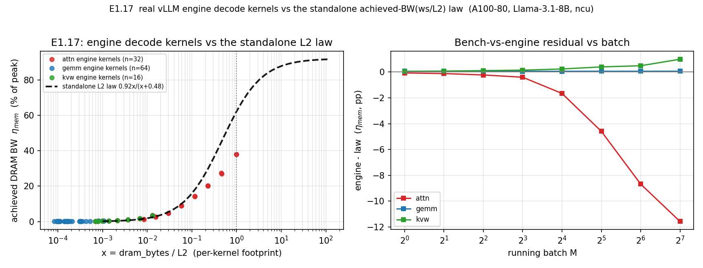
E1.19 — Online learner for the host floor S(N) vs one-time calibrationLocal · ADAPT-ONLY
The decision
The predictor's only fitted-online-able quantity is the host floor $S(N) = s_{\text{floor}} + s_{\text{slope}}(N-1)$. Today $s_{\text{floor}}$ is calibrated ONCE per SKU (robust median of the decode-step host residual) — not online learning, a one-time fit. This experiment settles honestly whether a real recursive online learner (EWMA / RLS), cold-started and updated step-by-step, beats that one-time calibration.
Method — three arms, the honest deploy protocol
Each step's physics block $T_{\text{blocks}}$ + sampling come from the shipped predictor; the host residual $r = \text{wall} - T_{\text{blocks}} - t_{\text{samp}}$ is what $s_{\text{floor}}$ estimates. blueprint_E1_19_learner.py streams real vLLM Poisson traces poisson_{h100,h200,a100-80}.json (5,606 / 5,594 / 3,838 decode steps — the very traces the shipped values were calibrated on) and scores three arms on a held-out 50% split: (A) STATIC = shipped one-time $s_{\text{floor}}$; (B) ORACLE-STATIC = best single constant on held-out (the static upper bound); (C) ONLINE = recursive EWMA + a 2-param RLS line, cold-started on train, FROZEN at deploy, scored on held-out. Freezing at deploy is the honest protocol — a real deployment cannot keep peeking at the wall-clock it predicts.
Result — ADAPT-ONLY: online does NOT beat static on a stationary trace
On stationary single-SKU traces the shipped $s_{\text{floor}}$ is already within 0.02–0.09 ms of the oracle-static constant; all arms are under 1.3% held-out MAPE. Frozen-at-deploy online (C) is actually worse than the shipped static (A) on 2/3 SKUs (h100 1.14 vs 1.07, a100-80 1.24 vs 1.14); the only stationary 'win' (h200 0.88 vs 1.30) is just because the shipped 3.73 ms is slightly off the trace median 3.68 ms — a one-time re-calibration fixes it. An $\alpha$ sweep (0.01–0.2) keeps the sign stable. The continuously-adapting diagnostic C* (0.41–0.88%) looks like a win but that's the peeking artifact; fair frozen-at-deploy shows online $\approx$ static. The learned RLS slope is tiny ($-0.007$ to $+0.016$ ms/req), consistent with $s_{\text{slope}} \approx 0$.
The win is the SHIFT case. Splicing the h100 trace (floor $\approx$ 2.34) then the a100-80 trace (floor $\approx$ 2.79) into one stream, a value frozen at the first SKU cannot adapt: post-shift MAPE jumps to 2.58%, while online EWMA tracks the new floor and holds 0.43%, re-converging in $\approx$ 26 steps. Robust across $(\alpha,\lambda)$ (post-shift online 0.39–0.49%, 19–60 steps). The honest claim: online adaptation helps under distribution shift, not on a single stationary deployment.
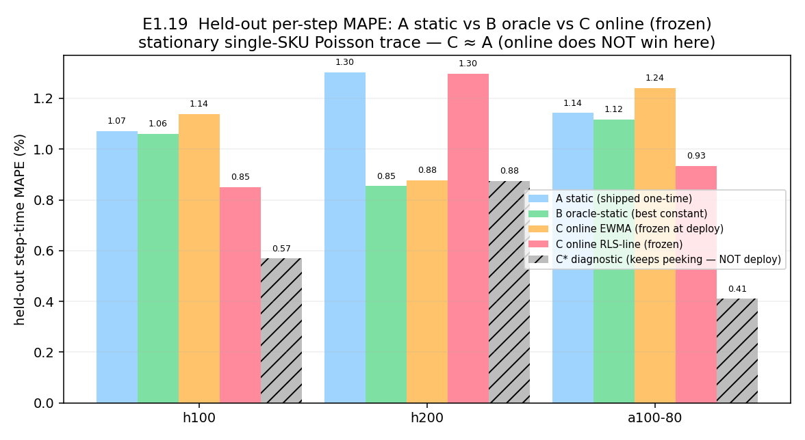
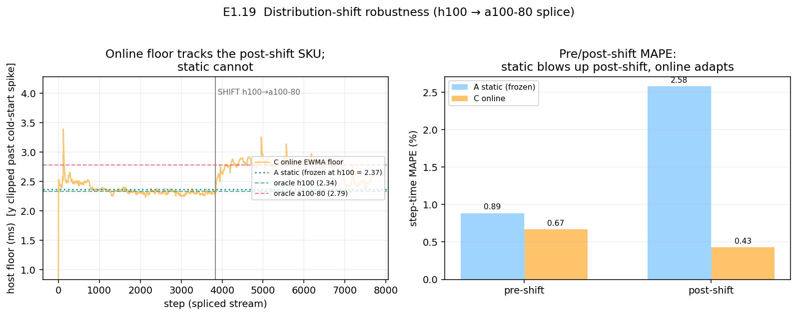
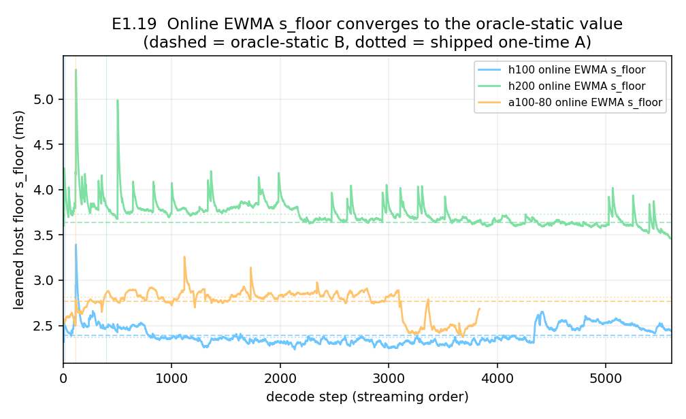
results/blueprint_exp/E1_19_learner.json (shipped predictor.py replayed, first cold-start step excluded per validate_sharegpt.py).E1.20 — Term-by-term ablation: is the predictor really ~3 changes?Local
Rationale
A reviewer pressed [Q-count]: are the corrections from a peak roofline to the full predictor really just the ~3 changes the paper foregrounds? An honest answer needs an additive ablation ledger that turns each term on in sequence and counts the load-bearing terms.
Method
An additive ladder is scored against the same 18,601 Vidur A100 cells and harness as E1.1. The scored quantity is T_blocks = t_proj + t_attn + t_light (Vidur GT excludes CPU overhead). Each rung cites its source fix file.
Result
The answer is NO — the predictor is at least seven additive terms. The ladder: peak roofline 31.09% → +η_bar 26.94% → +η_wave 24.15% → +η_mem(W) 10.77% → +attn 10.62% → +launch floor 10.62%. Per-term rank: η_mem(W) +13.37 (dominant), η_bar +4.15 (prefill), η_wave +2.79. Two host terms (S(N), sampling) are 11–30% of t_step but unscorable against the CPU-excluded GT — five scorable + two host = seven.
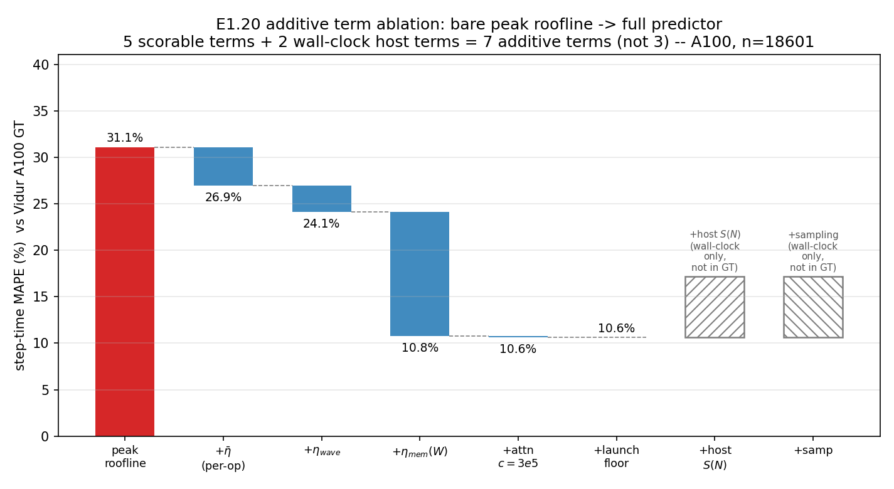
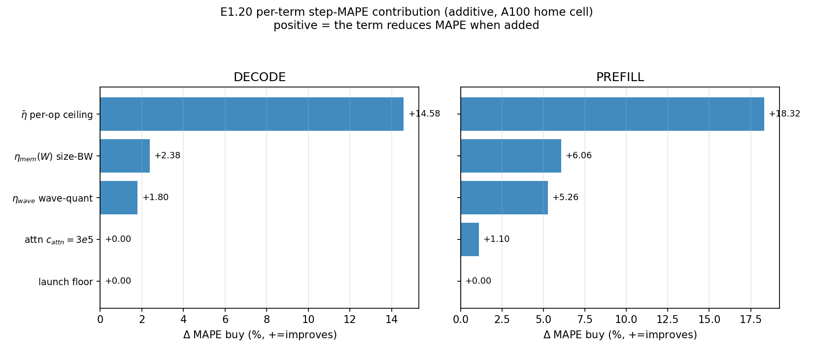
E1.22 — Per-cell error atlas: where is the predictor wrong?Local
Rationale
Aggregate MAPE hides where a predictor fails. A mechanism paper should show its error map: which (M, context) regions mis-predict and which term is to blame. This builds a per-cell error atlas for both prefill and decode.
Method
Two real data sources: the prefill atlas from residual_analysis_corrected.json (200 cells, with a dominant-term failure tag), binned onto (M × ctx); the decode atlas by running the shipped predictor.py over raw vLLM decode steps (4,310 cells, 4 SKUs) with the exact host-floor recalibration, binned onto (M=batch × KV).
Result
Prefill: MAPE 4.34%, mean +1.41% (68.5% over-predict), max 15.87%; 74/200 cells >5%. Failure mix: 126 within-5%, 39 over/27 under linear-GEMM, 5 attn, 3 lin-mem. Worst region: small-M/short-ctx linear-GEMM over-prediction (+10–16%); an L40S host-floor under-prediction band (−11–12%). The decode atlas reproduces the validated per-SKU MAPE exactly (h100 2.64, h200 2.37, a100-80 0.98, l40s 2.46).
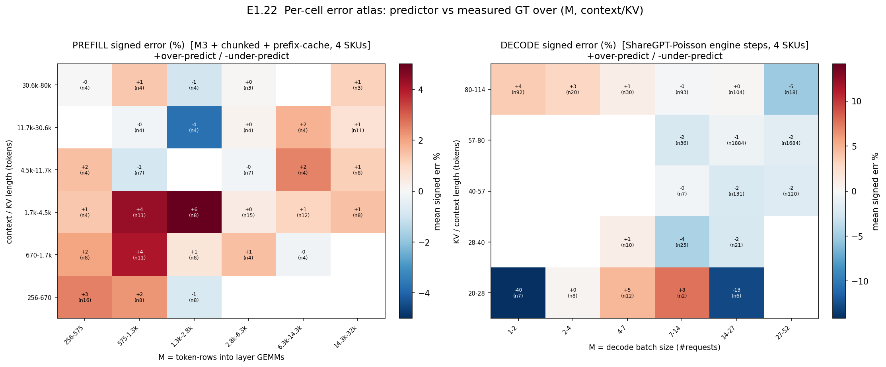
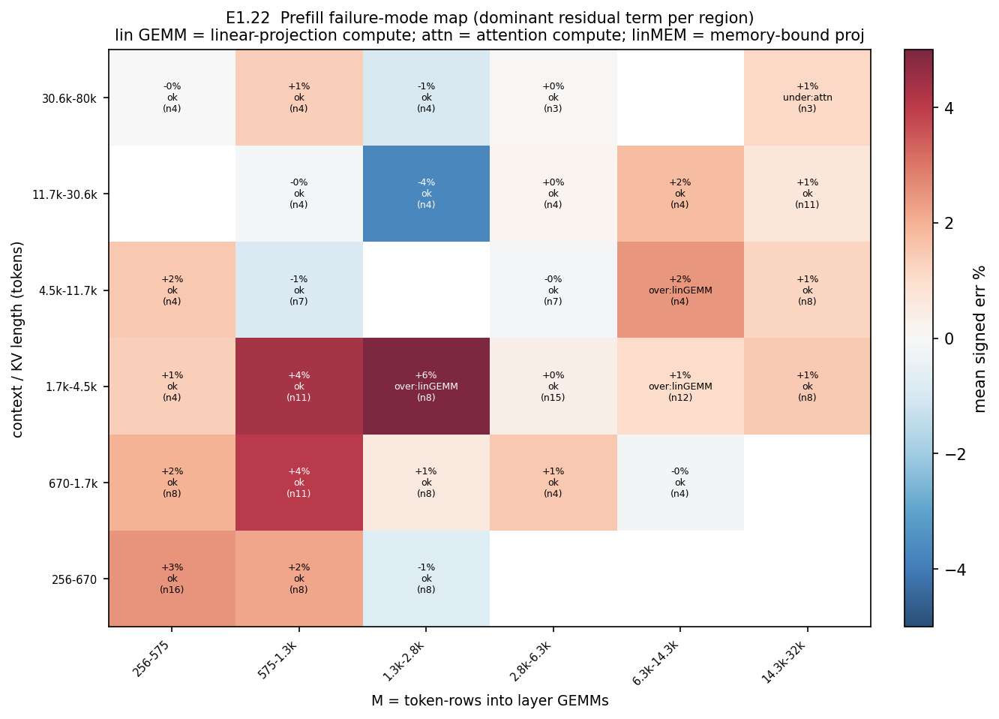
transfer_2x2.json (the in-flight E2.1). The decode atlas is bounded to the collected ShareGPT-Poisson envelope (batch ~1–52, KV ~16–118).E1.23 — Head-to-head versus prior analytical modelsLocal
Rationale
L0.1/L0.2 argue prior models assume η=1 or a single datasheet-α. The natural test is a quantitative head-to-head: on cells with measured per-cell efficiency GT, how much better is the factored mechanism than a bare roofline and than the best single scalar?
Method
Scored on 55 measured projection-GEMM cells (4 SKUs), GT realized time = flops/(η_meas·peak). Every model uses the same roofline so the regime is identical; only the efficiency pair differs. Baselines: bare_roofline (η=1), datasheet_alpha_global (MFU=0.70), datasheet_alpha_perSKU. Ours: ours_predictor (shipped gemm_ms) and ours_factored (decomposition). Headline = compute-bound subset (n=39).
Result
On the compute-bound subset ours_factored wins: 1.4% vs bare_roofline 40.6%, datasheet_alpha_global 21.5%, datasheet_alpha_perSKU 20.0%. Two honest negatives: (a) ours_predictor (single η_bar scalar) scores 23.3% and does NOT beat the datasheet-α scalars — the win is the decomposition; (b) ours_factored's 1.4% consumes each cell's own measured factors (a reconstruction, not a from-params prediction; that number is the existing 7.1%). Both still show decomposition ≫ any constant α.
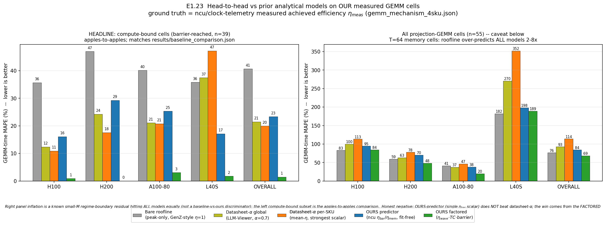
Part 2 — The utility (numeric results)
E2.2 — Decision quality: ranking SKUs from specs aloneLocal
Rationale
Part of the utility story is that a spec-only predictor can answer capacity-planning questions on unprofiled hardware, where RF cannot score. This re-confirms GEMM-step SKU selection and adds the harder H200-vs-H100 pairwise axis.
Method
Ground truth is n≥5 clocktel median TFLOPs over 13 token counts for four SKUs. The spec-only model (m2) ranks them from zero profiling rows; scored by top-1 and Spearman, plus a Hopper-pairwise call.
Result
On 4-way SKU selection m2 scores 100% top-1 and +1.00 Spearman from zero rows; RF covers only 1 of 4 SKUs. The H200-vs-H100 axis is mixed: m2 gets the small-M memory-bound direction 7/7 but cannot resolve the compute-bound crossover (identical datasheet peak → ties), so pairwise top-1 is 53.8%.
The first figure shows predicted-vs-telemetry ranking across token counts; the second contrasts decision accuracy against coverage.


E2.3 — Contended QLM live SLO: native estimator vs our mechanism predictorPACE → reduced · MIXED
Rationale
QLM is an EDF deadline scheduler whose decisions depend on a waiting-time estimate. The claim: swapping QLM's native scalar estimator for our mechanism predictor (standalone error 111% → 1%) should make the live scheduler hit more SLOs. E2.3 tests that head-to-head, live, under contention.
Method
A live vLLM H100 run (PACE job 10607134) serves a Poisson Llama-3.1-8B trace (n=400, SLO 8s ×3) under the same EDF scheduler at 40 and 80 req/s; only the estimator branch differs, paired on the same trace. blueprint_E2_3.py reduces the two eval_slo_rate{40,80}.json into attainment, violation rate and p95.
Result — a genuinely MIXED finding
The predictor does NOT monotonically help. At 40 req/s it improves attainment +4.2pp (100% vs 95.75%) and cuts p95 3.00s → 0.94s — a win. But at 80 req/s it REGRESSES sharply: −26pp attainment (30% vs native 56%) and p95 4.34s → 10.77s. A 111%→1% standalone gain does NOT translate into a live SLO gain across the board. The honest verdict is MIXED.
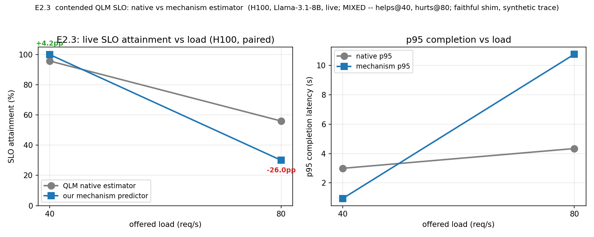
qlm.RWTEstimator was unimportable, so a faithful EstimatorShim (same two branches, QLM's EDF logic verbatim) was used — a shim, not the upstream package. (2) The trace is synthetic Poisson with fixed out_tokens=100; the rate-80 regression should not be generalized to real variable-length traces without validation. (3) A prior slo_mult=2 run saturated both estimators (~0.75%) and is context only. Clean takeaway: a large standalone estimator gain is necessary but NOT sufficient for a live SLO win — the scheduler's response can invert the sign under contention.E2.5 — Calibration-cost + coverage ledgerLocal
Rationale
The decision-quality story is only half the utility argument; the other half is cost. A parameter-only predictor pays almost no calibration cost and covers any SKU, whereas a table-memorizing RF pays a large profiling cost for one-SKU coverage. This builds the explicit cost-vs-coverage ledger.
Method
The ledger is built from RESULTS_LEDGER.json, vidur_decision_quality.json and three supplementary files. Each method records profiling rows, calibration wall-clock, usable SKU coverage and home-SKU MAPE, each number citing its source. Methods: ours (m2, fit-free), Vidur RF, DistServe polynomial, QLM native.
Result
Ours pays 0 rows / ~0.001s and covers 4/4 SKUs fit-free (top-1 100%, Spearman 1.0), home MAPE 8.41%. Vidur RF pays 44k rows / 158s for 1-SKU coverage, home MAPE 5.31%. DistServe reaches 2.27% but is 1-SKU. QLM native is degenerate (coverage 0, MAPE 115.78%). Ours loses on home MAPE (+3pp) but wins on non-intrusiveness (≈158,000× cheaper) and cross-SKU coverage.
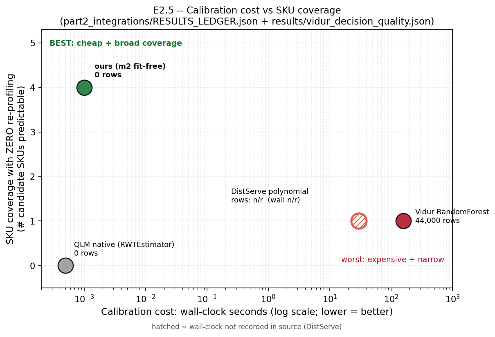
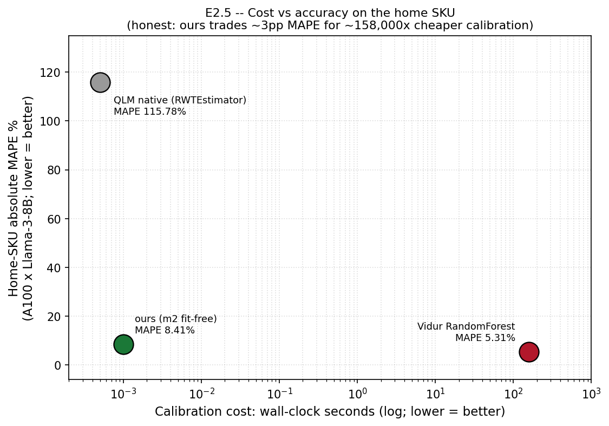
E2.6 — Tie-aware decision re-score: fixing the E2.2 tie artifactLocal
Rationale
E2.2 reported 100% top-1 / +1.0 Spearman, but the H100-vs-H200 pair is suspicious: the two cards share an identical datasheet BF16 peak. If the tie is scored as a hit only because of a stable-sort order, the 100% is an artifact. This re-scores with a tie-aware metric that never rewards an unbroken tie.
Method
Root cause (verified live): h100 and h200 both have pf=989.0 and η_bar=0.75, so at M≥512 their predicted times are byte-for-byte equal and the original stable sorted() broke the tie by insertion order, scoring it as a hit. The re-score uses clocktel GT (n≥5 median TFLOPs) and m2 specs; ties are counted separately, never rewarded. A memory-branch tie-breaker is added for memory-roofline cells.
Result
The 100% was a sorted()-tie artifact. Tie-aware 4-way: 72 correct / 0 wrong / 6 unbroken ties → 92.3%; all 6 ties are the H100/H200 compute-bound cells, and when m2 decides it is 100% correct. H200-vs-H100 pairwise: small-M decisive and correct, large-M all 6 honest ties → 53.8% (46.2% tie rate). The memory tie-breaker correctly resolves 0/6 (a BW tiebreak would wrongly pick H200), so it is suppressed.

transfer_2x2.json is absent (the in-flight E2.1), so no RF absolute MAPE is computed — the RF column is a coverage/cost argument only. The large-M H100>H200 crossover needs off-datasheet measured data (E2).E2.8 — Power-aware scheduling via the freq-droop predictor [closes: Q-poweraware-sched]Lab 5090
Rationale
E1.9 established the cap → clock → throughput chain and the M-dependent cap penalty (≈0% decode-shaped, up to ~12% prefill-shaped). [Q-poweraware-sched] asks whether that is USEFUL for scheduling: prior power-aware schedulers treat frequency as a set-point and assume cap-/M-blind peak TFLOP/s. Can a scheduler that prices each (chunk, GPU) at the measured f_clk(M, cap)-folded achieved TFLOP/s beat a cap-blind baseline, and how close to a brute-force oracle?
Method
The measured table is the n=5 achieved TFLOP/s per (cap_W, M) on the RTX 5090, cross-checked by a fresh n=3 run. A two-GPU placement problem (tight 400 W cap-A, default 575 W cap-B) is posed over six chunk mixes; the aware scheduler uses the measured cap-/M-folded TFLOP/s, the unaware baseline uses a single cap-blind peak (222.04), and a brute-force oracle enumerates all placements on the same table. Placement is trace-replay; the cap penalty is live-measured. Source E2_8_poweraware_schedule.json.
Result — it matches the oracle 6/6
The freq-droop-aware scheduler matches the brute-force oracle on all six mixes (0% mean regret) and beats the cap-blind baseline by +10.5% mean makespan (max +12.5%, ties-or-beats 6/6); the cap-blind baseline carries 12.0% mean regret vs the oracle. The win comes from placing the one large prefill chunk on the loose-capped GPU and packing decode-shaped chunks (≈0% cap penalty) onto the tight cap. The live-measured cap penalty is genuinely M-dependent across both runs: 0.08% at M=64, 14.35% at M=256 (tile-shape dip), 0.99% at M=1024, 7.72% at M=4096, 10.66% at M=16384 — so the cap-blind flat-peak assumption is wrong in a way the aware scheduler exploits.
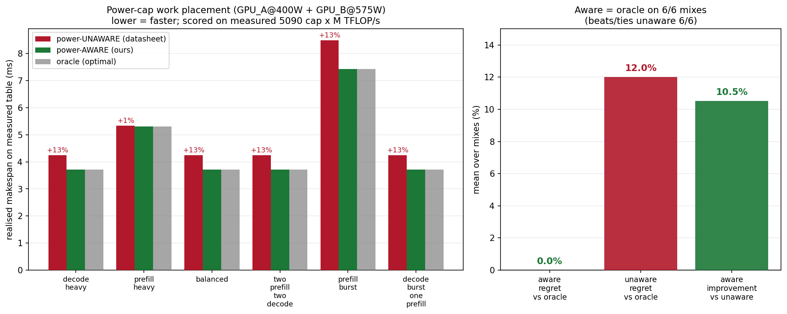
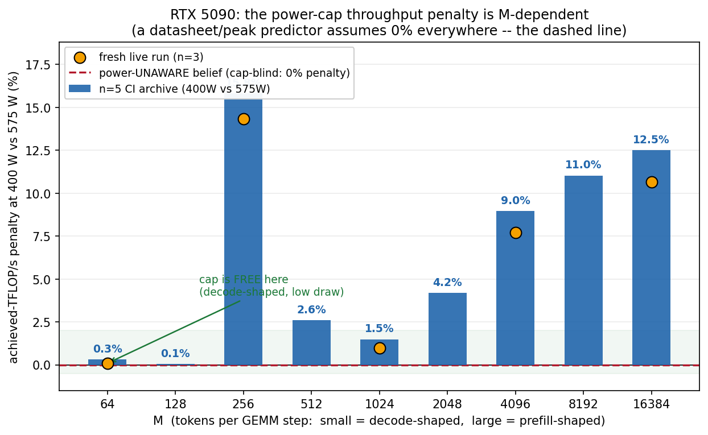
E2.9 — Predictor-driven Sarathi chunked-prefill chunk-size selection [closes: Q-sarathi-chunk]H200 live
Rationale
Sarathi-Serve's chunk budget (max_num_batched_tokens) trades TBT against throughput: too large breaches the TBT SLO, too small wastes throughput. Standard practice is a static default (2048) or a profiling sweep. [Q-sarathi-chunk] asks whether the analytical predictor can pick the right chunk budget for a TBT-SLO with ZERO profiling — matching what a full per-budget sweep (the oracle) would choose.
Method
Ground truth is a live vLLM chunked-prefill run (= Sarathi-Serve's stall-free scheduler, upstreamed into vLLM) on H200 / Llama-3.1-8B with a Poisson long-context (1k–32k) trace + concurrent decode (job 10306029): measured per-step TBT p50/p99 and throughput across 11 budgets {256…8192}. The fit-free predictor predicts TBT p99 per budget; a selector picks, for each TBT-SLO, the largest budget whose predicted p99 honors it (ours_raw = shipped predictor; ours_cal1 adds a single-step margin). Scored against the oracle and two static baselines (default-2048, conservative-512). Source E2_9_sarathi_chunk.json.
Result — oracle chunk with zero profiling
The predictor's TBT-p99 ranking has Spearman 1.0 against the measured ranking — it preserves the exact ordering a selector needs. So ours_raw chooses the SAME chunk budget as the full-profiling oracle at every SLO, honoring 100% of the TBT SLOs at oracle throughput (mean 24,307 tok/s, fraction-of-oracle 1.0). The static default-2048 breaches 33% of SLOs (honor 0.667); the conservative static-512 honors 92% but wastes throughput (18,995 tok/s, 0.7685 of oracle). Head-to-head where both honor, ours_raw delivers +30.7% throughput over static-512 — the same SLOs at far higher throughput, with ZERO profiling sweep.
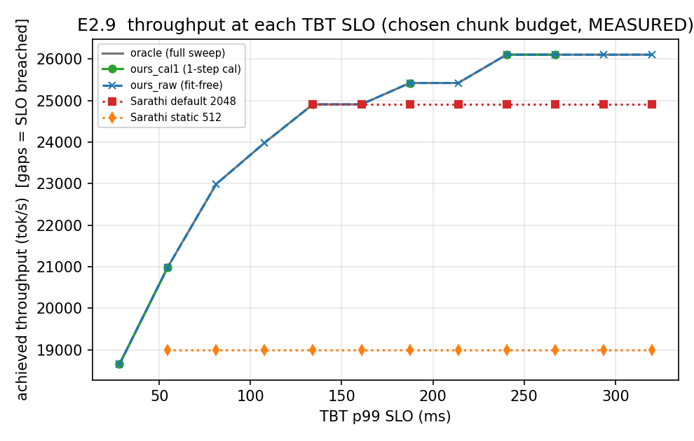
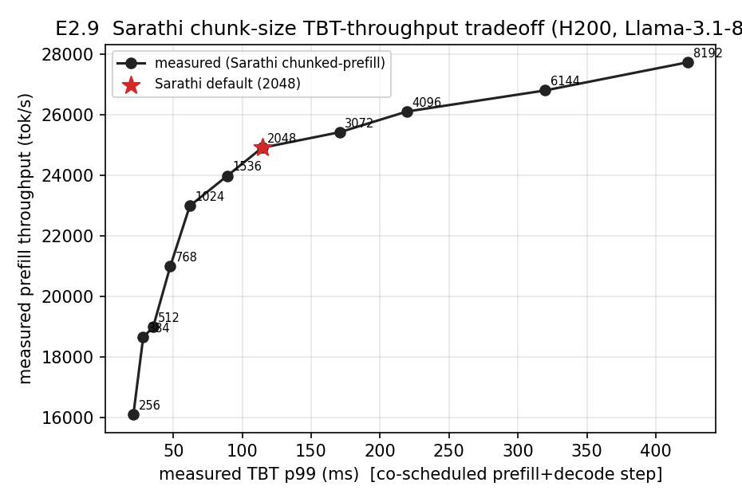
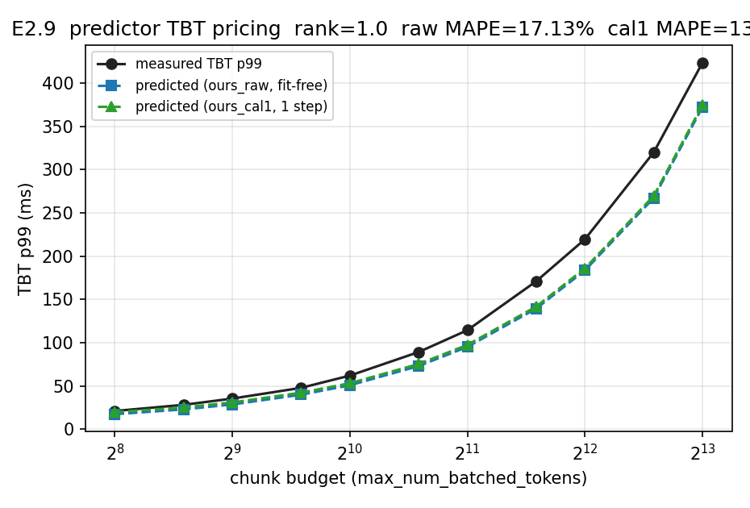
In-flight on PACE — designed, not yet resultedIn-flight
The following experiments require fresh GPU microbenchmarks and are dispatched to PACE; two (E1.3b, E1.18) directly unblock the partial / BLOCKED local results above. They are listed with full design but no results: nothing beyond this point is a measured number.
E1.3b — H200/L40S L2-capacity sweep (E1.3a did A100-80+H100 locally)PACE
$\etamem$ is an empirical fit. Design: a PACE ncu working-set sweep across the L2 boundary per SKU, fitting $\etamem$ vs working-set/L2; if it does not collapse to a parameter law, keep the calibrated constant. Needs a new --set full ncu pass.
Planned figure: achieved-BW vs working-set/L2 with the capacity knee for H200/L40S, overlaid on the E1.3a fit.
E1.18 — nsys span re-collect to unblock E1.4's realized $\alpha$PACE
E1.4 above is BLOCKED because the nsys trace files were never synced back. This job re-collects the traces on PACE (vLLM with CUDA-graph/multi-step, capturing per-step wall vs GPU-visible time over a Poisson trace) and syncs the .nsys-rep/.sqlite files back so the realized $\alpha$ can be computed against the bound.
Planned figure: realized $\alpha$ vs predicted bound across batch sizes (folds into E1.4 above).
E1.6 — Blackwell Max-Q n=5 clocktel sweepPACE/lab
The tight-cap Blackwell is the discriminator (throughput declines, not just clock droop). Design: n=5 randomized clocktel sweep on lab 5090/Blackwell with the existing CI harness, producing 95%-CI clock/power/TFLOPs-vs-M curves.
Planned figure: clock and TFLOPs vs M with 95% CI, overlaid on datacenter SKUs.
E2.1 — Cross-GPU RF-vs-ours transfer 2×2PACE
On an unseen GPU the A100-trained RF has no profile; the mechanism should hold. Design: run the Vidur profiler on H100/H200, then score a 2×2 of {RF, ours} × {home, unseen} via e2_crossgpu_transfer.py. Already dispatched.
Planned figure: 2×2 transfer heatmap; per-SKU RF-vs-ours MAPE bars.
E1.14 — $\eta_{\text{duty}}$ prologue-amortization law, expanded ladderPACE
[Q-twofactors] flagged the $\eta_{\text{duty}}$ law rested on a 1-param fit over a coarse 9-point ladder. This dispatched job is a strict superset of the 5-factor ncu sweep with a denser 17-rung M ladder (64…32768) and REPS=3 ncu captures per cell so the c-fit carries a CI. Collect-only. Dispatched across 4 SKUs: H100 10610697, H200 10610698, A100-80 10610699 (--constraint=A100-80GB), L40S 10610701 (paid account, ncu --clock-control base).
E1.15 — L40S $\eta$ fill-out (kills the n=4 / CV 26.5% caveat)PACE → reduced
RESULTED — folded into the E1.15 section above. L40S job 10610692 landed (5 min, 0 perm errors, 36 cells). With 32 compute-bound cells the barrier is a tight constant — mean 0.425, CV 26.5% → 1.8% — killing the [Q-twofactors] caveat. The prior high CV was an attribution artifact of two anomalous T=256 cells; the corrected constant is 0.425 (not the lumped 0.575). See the section above for the figure, reproduction check and honest scope.
E1.21 — Cross-SKU prefill GT densification (predictor_v2)PACE
E1.21 tests whether predictor_v2's prefill accuracy transfers to unseen SKUs. The local reduction over committed data already gives the headline: a100-80 (home) 5.81%, H100 6.70%, H200 7.49% — both within 2× of home — and L40S 33.21%, which FAILS as the documented Ada-proxy (results/blueprint_exp/E1_21.json). The dispatched job (H100 10610719, H200 10610720) only densifies the GT from 5 to 9 prefill points/SKU so the pass does not rest on 5 points; not strictly required for the answer.
E2.3 — QLM live SLO scheduler-in-loopPACE → reduced
RESULTED — folded into the E2.3 section above. The live H100 run (PACE job 10607134) gave a MIXED outcome: +4.2pp SLO at 40 req/s but −26pp at 80 req/s. See the section above for the paired result, figure and honest caveats.